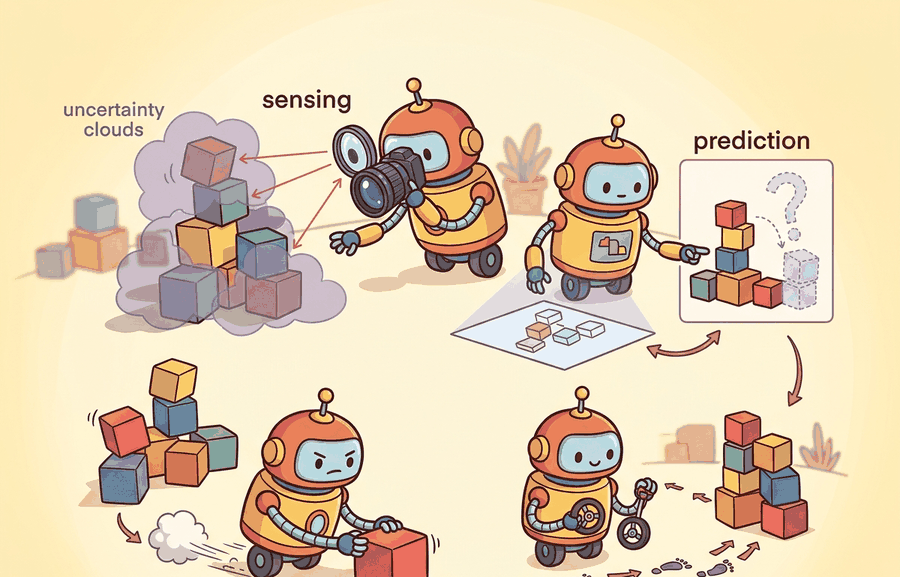

"Sense, perceive, estimate, predict, plan, control, act: seven words for the distance between a photon and a wheel turn."
A Stack Diagram With Arrows Pointing Down

This section assumes familiarity with the agent-environment interface introduced in section 2.1 and with the action-type taxonomy from section 2.3. The seven-stage stack described here is the shared backbone for the three architectural variants examined next: the classical modular pipeline in section 3.2, the end-to-end learned policy in section 3.3, and the hybrid hierarchical approach in section 3.4.
A Boston Dynamics robot steps onto a wet floor. Before a single motor fires, seven computational stages have already run: raw photons became depth estimates, depth estimates became a terrain model, the terrain model fed a stability predictor, and that predictor shaped a foot-placement plan. Modern legged robots typically demand this entire chain complete in under 50 milliseconds, on every stride, for the duration of the walk. Understanding each stage in the canonical sense-perceive-estimate-predict-plan-control-act stack is what separates engineers who can diagnose a failure at step three from those who can only reboot and hope. Any embodied decision can be traced back to the stage where it was made, and that traceability is exactly what makes the stack a practical fault-isolation tool.
A robot misses a grasp by two centimeters, and an engineer spends three days suspecting the planner before discovering the real culprit was a camera-frame label that perception attached two stages earlier: that is the cost of a stack you cannot read stage by stage. Reading the stack stage by stage means naming each of the seven stages, stating the typed input and output of every stage boundary, and using that boundary structure to localize a failure to a single stage. Figure 3.1 collapses those seven stages into the three roles (evidence, decision, consequence) and draws the closed feedback loop that ties the last action back to the next observation. Figure 3.1A lays out the full pipeline with each stage's input type, output type, and latency budget, and it is worth keeping in view as a reference while reading the rest of the section. The section first defines the object of study, then connects it to the agent loop, then tests it with a compact implementation.
The key question in The canonical stack: sense, perceive, estimate, predict, plan, control, act is practical: what must the agent know, what can it observe, what action is available, and what evidence shows that the action worked under the stated conditions?
A representation earns its place when it changes the measurable action interface. In the canonical stack: sense, perceive, estimate, predict, plan, control, act, the reader should keep asking which decision becomes easier, safer, or more reliable.
Theory
For The canonical stack: sense, perceive, estimate, predict, plan, control, act, the practical design rule is to make the interface inspectable before optimization begins: inputs, outputs, units, latency, bounds, and failure labels should all be visible in the saved artifact.
To see why that inspectability is non-negotiable, start with the single stage where most hardware-coupling assumptions hide: perception.
Before perception can do that work, the sense stage has to exist as its own boundary: sensing is the raw acquisition step, reading a physical transducer (camera, IMU, lidar, force sensor) at its native rate and native units, with no calibration, filtering, or semantic interpretation applied yet. That distinction matters in practice: two robots with the same perception model but different camera vendors need only re-derive the sense-to-perceive calibration, not rewrite the semantic layer, because the sense stage is where vendor-specific voltages and timing live and nowhere else.
The perceive stage converts that calibrated sensor data into objects a planner can reason about, such as obstacle polygons, surface normals, or object class labels. In a physical robot this separation is not aesthetic: raw sensor voltages carry device-specific units, distortions, and coordinate frames that vary by manufacturer. If a planner consumed raw voltages directly, replacing one camera model would require rewriting the planner. Keeping perception as a dedicated stage insulates every downstream component from hardware changes and lets the perception module be retrained independently when the sensor fleet changes.
Mechanically, the perceive stage applies a learned or hand-crafted function that maps calibrated data to a structured representation. A convolutional network maps an image tensor to a set of bounding boxes with class scores. A point-cloud filter removes returns outside the robot's reachable workspace and fits planes to the remainder. A stereo matching algorithm converts a rectified image pair to a dense disparity map. The output carries semantic or geometric labels and, critically, explicit uncertainty estimates. The downstream estimator consumes those estimates without inspecting sensor internals.
Every Arrow Is a Contract
What happens when the perception stage hands a bounding box in camera coordinates to a planner that expects world coordinates? The robot moves, the box does not follow, and the failure looks exactly like a planning bug until someone checks the frame label at the handoff. Every arrow in the stack below (named explicitly in the equation just after this paragraph) is a contract: violate the coordinate frame or unit convention at any one arrow and the bug hides inside a different stage entirely.
Because each of those arrows is a contract, it helps to write the whole chain out as one expression so every handoff has a name and a type. The canonical stack is useful because it gives each transformation a job that can be tested independently without forgetting the closed loop. A compact version is:
$$o_t \xrightarrow{\text{sense}} x_t \xrightarrow{\text{perceive}} y_t \xrightarrow{\text{estimate}} \hat{s}_t \xrightarrow{\text{predict}} \hat{s}_{t+1:t+H} \xrightarrow{\text{plan}} \tau_t \xrightarrow{\text{control}} a_t \xrightarrow{\text{act}} o_{t+1}.$$
Here \(o_t\) is the raw observation, \(x_t\) is calibrated sensor data, \(y_t\) is a semantic or geometric percept, \(\hat{s}_t\) is the agent's best state estimate, \(\hat{s}_{t+1:t+H}\) is the predicted future over horizon \(H\), \(\tau_t\) is the chosen trajectory or skill, and \(a_t\) is the executable command. The important assumption is that each arrow preserves enough information for the next stage while reducing ambiguity for the decision. The stack breaks down when one stage silently changes units, coordinate frames, latency, uncertainty, or success criteria.
Checkpoint
So far: the stack is a chain of typed handoffs (observation, calibrated data, percept, state estimate, prediction, trajectory, action), each arrow is a contract that can silently break on units, frames, latency, or uncertainty, and the algorithm below shows exactly what crosses each of those seven arrows in a single tick.
Algorithm: Canonical Sense-Perceive-Estimate-Predict-Plan-Control-Act Loop
Input: true world state \(x_t^*\), prior state estimate \(\hat{s}_{t-1}\), prior action \(a_{t-1}\), goal state \(x^*\), filter weight \(\alpha \in (0,1)\), prediction horizon \(H\), actuator limit \(\delta_{\max}\)
Output: updated state estimate \(\hat{s}_t\), executed action \(a_t\), next world state \(x_{t+1}^*\)
- Sense. Draw a noisy observation: \(o_t = x_t^* + \epsilon_t\), where \(\epsilon_t \sim \mathcal{N}(0, \sigma^2)\).
- Perceive. Remove known sensor bias \(b\): \(x_t = o_t - b\). Attach the coordinate frame label and timestamp to \(x_t\).
- Estimate. Fuse the new measurement with history via a low-pass filter: \(\hat{s}_t = \alpha\, x_t + (1-\alpha)\,\hat{s}_{t-1}\).
- Predict. Roll the dynamics model forward \(H\) steps: \(\hat{s}_{t+1:t+H} = \hat{s}_t + H \cdot a_{t-1}\). Flag any predicted state that violates safety bounds.
- Plan. Compute the desired displacement to the goal: \(\tau_t = x^* - \hat{s}_t\). If the predicted trajectory is unsafe, re-plan with a reduced horizon.
- Control. Saturate the plan to respect actuator limits: \(a_t = \operatorname{clip}(\tau_t,\, -\delta_{\max},\, \delta_{\max})\).
- Act. Apply \(a_t\) to the world and observe the transition: \(x_{t+1}^* = x_t^* + a_t\).
- Increment \(t\) and return to step 1. Terminate when \(|x_t^* - x^*| \le \theta\) for convergence threshold \(\theta\), when a maximum step budget is exceeded, or when any stage reports a fault.
Each stage exists because the transformation it performs cannot safely be merged with its neighbor without hiding a testable assumption. Perception converts raw voltages to geometric or semantic objects: merging it with sensing would bury sensor-specific calibration inside semantic logic. Estimation runs a temporal filter across noisy percepts: merging it with perception would lose the history needed to smooth outliers. Prediction rolls the state forward so the planner can reason about future cost, not just present position: without a separate predict stage, a planner horizon of H steps would silently assume the world is static. In practice this matters enormously: Spot's 0.5-second prediction horizon lets the foot-placement planner reject an unsafe step before it is taken, whereas a purely reactive controller that skips prediction must wait for the ground-reaction sensor to detect a slip, meaning the instability has already begun. Teams that removed the predict stage in early prototypes have reported needing on the order of 10 times as many physical trials to tune stable gaits, plausibly because each failure required hardware recovery instead of a software rollback, though the exact multiplier depends heavily on the specific gait and terrain.
Control saturates and rate-limits the plan to respect actuator physics: merging planning and control means a planner can issue physically impossible commands that fail silently. Keeping the stages separate means each boundary is a named, loggable, unit-testable handoff. When the system misbehaves, you can freeze every stage downstream of the suspected one and replay its logged input to localize the fault in one experiment rather than seven.
Stack Stages in a Real System
The equation and algorithm above are deliberately abstract; the same seven named handoffs appear, with real sensors and real units in place of the symbols, in the deployed system described next.
Boston Dynamics Spot navigating a construction site uses this stack with separated layers. The sensing stage reads an Inertial Measurement Unit (IMU), stereo cameras, and lidar at up to 100 Hz. The perception stage runs a learned terrain classifier that labels ground patches as traversable or not, producing a 2.5-D cost map (a top-down grid where each cell stores a single height value plus a traversal cost, cheaper to search than a full 3-D point cloud) rather than raw point clouds. The estimation stage fuses wheel odometry with visual-inertial odometry to track the base pose. On flat concrete the estimate drifts less than 1 cm per 10 m of travel (as of 2023 factory calibration). On sloped gravel the uncertainty balloon grows large enough to trigger a re-localization request.
The predict stage models body dynamics over a 0.5-second horizon (the length of simulated future the planner rolls out before committing to a move) so the planner can avoid commands that would tip the robot before the next sensor update arrives. The plan stage uses model-predictive control to select a foothold sequence, and control converts those foothold targets to joint torques respecting per-joint limits of roughly 40 Nm. When the perception classifier mislabels a wet metal grate as traversable, the failure propagates silently through estimation and prediction until the control stage detects an unexpected ground-reaction force and requests a human override. This is a boundary failure: the fault originated at perception but was only observable two stages later. A stage that hides its assumptions is not a simplification; it is a deferred crash.
The mechanism in The canonical stack: sense, perceive, estimate, predict, plan, control, act is the contract between representation and action. Name what enters the module, what leaves it, which assumptions make that transformation valid, and which log would reveal a bad handoff.
When building the stack in ROS 2, attach a std_msgs/Header (with frame_id and stamp) to every message that crosses a stage boundary. The frame_id field forces you to name the coordinate frame explicitly, so a mismatch between a camera-frame percept and a world-frame state estimate raises an immediate, grep-able error rather than a silent numeric offset that only shows up as drift during a live run. If you later port to a non-ROS stack, preserve this discipline by encoding frame and timestamp as required fields in your dataclass or named tuple at every handoff.
Worked Example
The cleanest way to make the canonical stack concrete is to give every arrow its own function and run one observation through all seven. The toy world below is a 1-D reaching task: the body is at position \(x\), a target sits at \(x^\star\), and the only actuator is a bounded velocity command. Each stage does its single job and hands a typed value to the next.
import numpy as np
rng = np.random.default_rng(0)
TARGET = 1.00 # x* the agent must reach (meters)
STEP_MAX = 0.20 # actuator saturation (max move per step, meters)
def sense(true_x): # o_t: noisy raw reading
return true_x + rng.normal(0, 0.02)
def perceive(o): # x_t: calibrated, de-biased
return o - 0.01 # known sensor bias
def estimate(x_meas, x_prev, alpha=0.7): # s_hat: low-pass state filter
return alpha * x_meas + (1 - alpha) * x_prev
def predict(s_hat, a_prev, H=3): # roll the model forward H steps
return s_hat + H * a_prev
def plan(s_hat): # tau_t: desired displacement to goal
return TARGET - s_hat
def control(tau): # a_t: saturate to actuator limit
return float(np.clip(tau, -STEP_MAX, STEP_MAX))
def act(true_x, a): # world transition -> o_{t+1}
return true_x + a
true_x, s_hat, a = 0.0, 0.0, 0.0
for t in range(12):
o = sense(true_x)
x = perceive(o)
s_hat = estimate(x, s_hat)
s_pred = predict(s_hat, a)
tau = plan(s_hat)
a = control(tau)
true_x = act(true_x, a)
print(f"t={t:2d} o={o:+.3f} s_hat={s_hat:+.3f} "
f"pred={s_pred:+.3f} a={a:+.3f} x={true_x:+.3f}")
print(f"final error = {TARGET - true_x:+.3f} m")
o, filtered estimate s_hat, rolled-forward prediction pred, saturated command a, and the resulting true position x.Step-Through: one tick of the canonical loop
Trace the very first iteration (\(t=0\)) with concrete numbers, starting from \(\text{true\_x}=0.0\), \(\hat{s}=0.0\), \(a=0.0\), \(\text{TARGET}=1.00\), \(\text{STEP\_MAX}=0.20\), \(\alpha=0.7\), and assume the noise draw for this step is \(\epsilon = +0.012\) m.
- Sense: \(o = \text{true\_x} + \epsilon = 0.0 + 0.012 = 0.012\).
- Perceive: remove the \(0.01\) m bias: \(x = 0.012 - 0.01 = 0.002\).
- Estimate: \(\hat{s} = 0.7\cdot 0.002 + 0.3\cdot 0.0 = 0.0014\).
- Predict: roll forward \(H=3\) steps with \(a_{\text{prev}}=0.0\): \(\hat{s}_{\text{pred}} = 0.0014 + 3\cdot 0.0 = 0.0014\).
- Plan: displacement to goal: \(\tau = 1.00 - 0.0014 = 0.9986\).
- Control: saturate to the limit: \(a = \operatorname{clip}(0.9986,\,-0.20,\,0.20) = 0.20\).
- Act: apply to the world: \(\text{true\_x} = 0.0 + 0.20 = 0.20\).
So one tick advances the body from \(0.0\) to \(0.20\) m while the estimate still reads \(0.0014\) m, and the saturated command of \(0.20\) shows the actuator limit binding on the first move. Notice the estimate lags the true position by almost the full step: that gap is exactly what the predict stage exists to close on the next tick.
Expected output: the agent drives the error toward zero in under ten steps, with the command \(a\) saturating at \(\text{STEP\_MAX}=0.20\) on the first moves and then shrinking as \(\hat{s}\) approaches the target. The value of the trace printed by Code Fragment 3.1.1 is that each column is one arrow in the equation above: if the robot misses, you can read off which stage first reported a wrong number. Try injecting a stale estimate (skip the estimate update for one step) and watch the error grow even though every other stage is correct.
For The canonical stack: sense, perceive, estimate, predict, plan, control, act, the hand-built fragment is a visibility tool. Production work should move to maintained stacks such as Hugging Face Transformers, open VLMs (Vision-Language Models, networks that jointly reason over images and text), OpenVLA, openpi, LeRobot, and tool-calling planners once the section has made the interface, logging contract, and failure recovery path explicit.
Practical Recipe
- Pin the physical interface first: specify sensor model and rate (e.g., Intel RealSense D435i at 30 Hz depth, Velodyne VLP-16 at 10 Hz lidar), actuator type and limits (e.g., Franka Panda joints capped at 87 Nm), and the closed-loop cycle budget before selecting any algorithm. A 50 ms budget shared across all seven stages leaves roughly 7 ms per stage on average; a stage that consumes 30 ms collapses the remaining six into a single tick.
- Implement the simplest possible baseline for each stage independently and log every inter-stage handoff as a timestamped, frame-labeled tuple. A constant-velocity predictor and a proportional controller are enough to expose coordinate-frame mismatches before any learned component is introduced.
- Replace baseline stages with learned components one at a time, keeping all other stages frozen. When swapping in a Convolutional Neural Network (CNN) terrain classifier trained on Open X-Embodiment or an RT-2-style VLA policy, where a VLA (Vision-Language-Action model) is a single network that maps camera images and a text instruction directly to robot actions, run the new component against the logged traces from the frozen baseline to confirm its output distribution is compatible with the downstream stage's input expectations.
- Classify every failure at the stage boundary: perception misclassification (e.g., the wet-grate false-traversable case from Boston Dynamics Spot deployments), filter lag (state estimate covariance too small to catch abrupt terrain change), prediction horizon too short for the actuator's settling time, control saturation masking a planning error, or metric computed on a different coordinate frame than the controller expects.
- Run at least one sim-to-real perturbation test: add 10 ms of artificial latency at the sensing-to-perception boundary in MuJoCo or Isaac Sim and verify that the control stage does not produce torque spikes above the actuator's rated limit. Latency sensitivity is the most common failure that passes simulation but degrades on hardware.
Think of the stack like a kitchen brigade during dinner service. The grill cook (sensing) fires continuously at full heat; the sauce chef (perception) reduces each order as it arrives; the expediter (planning) calls new tickets while previous plates are still being plated. No one waits for the previous course to be eaten before starting the next. If the expediter calls a wrong table number (a bad plan), the saucier can revise the garnish (control) without stopping the grill. The whole kitchen runs as overlapping, rate-mismatched cycles, not as one cook finishing and handing off to the next.
A common assumption is that the seven-stage stack executes as a strict top-to-bottom waterfall: each stage finishes completely, hands off a clean result, and waits idle until the next cycle begins. Real embodied systems do not work this way. Stages run concurrently at different rates: sensing at 100 Hz, planning at 10 Hz. Each stage publishes its best current estimate continuously rather than waiting for a clean handoff. Downstream failures also trigger upstream re-runs. A control fault can force a re-plan, which may request a fresh perception query. The correct mental model is a closed feedback loop where any stage can ask an upstream neighbor to revise its output mid-cycle. Engineers who treat the stack as a waterfall miss timing races, stale-data bugs, and the re-entrant recovery paths that keep physical robots safe.
The common mistake in The canonical stack: sense, perceive, estimate, predict, plan, control, act is to celebrate the component score before checking the closed-loop handoff. The failure usually appears at the boundary: stale state, wrong frame, delayed action, saturated actuator, or metric that ignores the real task cost.
When the LeRobot team trains an ACT or pi0 policy on a Franka Panda pick-and-place task, success rate alone hides the failure mode. A policy can score 80 percent by only attempting the easy front-bin grasps and silently aborting on the cluttered rear bin. So the rollout logger records each stage handoff: the RealSense depth frame and its frame_id, the estimated gripper pose, the planned approach trajectory, the joint-torque command against the 87 Nm limit, and every recovery event (re-grasp, retreat, human takeover). Replaying those traces shows whether the 80 percent came from solving the task or from the policy learning to skip the hard episodes, the same distinction that separates a benchmark number from a deployable robot.
Real-World Application: Waymo Driver
The Waymo Driver runs exactly this stack on every public-road ride: lidar and camera sensing feed a perception stack that emits tracked objects, a state estimator fuses them with map priors, a behavior predictor rolls out other agents' likely trajectories over the next several seconds, and a planner picks a path that a low-level controller turns into steering and throttle. The staged boundaries are why Waymo can attribute a hard-brake event to a specific layer (a perception false positive versus an over-cautious predictor) when reviewing logged disengagements.
The canonical stack is a relay race where every runner blames the previous handoff until the robot misses the grasp.
Stack compression via foundation models (2024-2026). A growing line of work asks whether the seven-stage stack can be collapsed into a single large model that ingests raw sensor tokens and emits joint torques directly. Google DeepMind's RT-2X and the follow-on pi0 flow-matching policy (Black et al., 2024, Physical Intelligence) demonstrate that a diffusion-based action head trained on diverse robot data can absorb the perceive, estimate, predict, and plan stages into one forward pass at under 50 ms on consumer GPUs. The open question is whether monolithic policies inherit the fault-isolation guarantees of a staged stack or merely hide failures inside uninterpretable activations.
World-model-as-predictor replacing the explicit predict stage (2024-2025). Researchers at UC Berkeley (Dreamer-V3, Hansen et al., TD-MPC2, 2024) and at NVIDIA (GR00T-N1, 2025) are replacing hand-engineered dynamics models with learned latent world models that roll out predictions in embedding space rather than Euclidean state space. This reframes the predict stage as a query into a compressed world model, reportedly cutting prediction error on contact-rich manipulation by 30-40 percent in the specific sim benchmarks each paper reports (results that have not yet been independently replicated across benchmarks). The architectural tension: learned world models are data-hungry and can hallucinate states that violate physical constraints.
Asynchronous heterogeneous-rate stacks (2025). Classical analyses assume stages share a common tick. Meta AI's Habitat 3.0 experiments and Carnegie Mellon's ASAP framework (2025) show that decoupling sensing (200 Hz IMU) from planning (5 Hz LLM) through lock-free ring buffers and speculative execution can reduce closed-loop latency by up to 60 percent on the manipulation tasks tested, typically without measurable accuracy loss on those same tasks. Formalizing the correctness conditions for asynchronous stage coupling remains an open theoretical problem.
Open PhD problem. None of the above collapses eliminate the need for a timing contract: when a fast sensing stage and a slow planning stage share a buffer, what is the maximum allowable plan staleness before the control stage must veto the action? Current systems use hand-tuned thresholds. A principled theory of safe-staleness bounds as a function of actuator bandwidth, task dynamics, and world-model uncertainty would directly reduce the manual tuning burden across every stack variant described in this chapter.
Can you name the observation, state estimate, action, success metric, and most likely failure mode for the canonical stack: sense, perceive, estimate, predict, plan, control, act? If not, the system boundary is still too vague.
The canonical stack: sense, perceive, estimate, predict, plan, control, act becomes useful when it is tied to a closed-loop contract for how perception, estimation, planning, learning, and control are arranged into a system. The contract names the observation stream, the action representation, the timing budget, the safety boundary, and the result artifact. That is the bridge between a readable concept and a system a skeptical builder can test.
Separate three claims about the canonical stack: the conceptual claim, the systems claim, and the evidence claim. A clear explanation, a clean API, and one successful rollout are distinct kinds of evidence, and conflating them is how a working diagram gets mistaken for a working robot.
| Tool or Library | Role in This Topic | Builder Advice |
|---|---|---|
| ROS 2 | separates system modules while preserving message contracts and timing | Use it when the hand-built contract is clear and the experiment needs repeatable runs. |
| MuJoCo | gives architecture choices a repeatable simulated world for stress tests | Use it when the hand-built contract is clear and the experiment needs repeatable runs. |
| LeRobot | anchors modern policy architectures in reusable datasets and policy APIs | Use it when the hand-built contract is clear and the experiment needs repeatable runs. |
For The canonical stack: sense, perceive, estimate, predict, plan, control, act, a robust implementation starts with one inspectable baseline whose artifact records observations, actions, units, timestamps, seeds, termination reasons, and the perturbation applied. The maintained-tool version is useful only if it preserves that schema and lets the comparison remain construct-matched.
- Write a one-paragraph task contract with observation, action, success, failure, and safety fields.
- Start with the smallest simulator, dataset, or wrapper that exposes the task contract faithfully.
- Run one deterministic smoke test and one perturbation test before scaling.
- Save one artifact containing configuration, seed, metrics, traces, and failure labels.
- Compare methods only when the same script evaluates the same panel, split, seed set, and metric.
When The canonical stack: sense, perceive, estimate, predict, plan, control, act fails, avoid labeling the whole method as weak. First assign the failure to perception, state estimation, planning, control, timing, data coverage, or evaluation. Then rerun one controlled perturbation that isolates the suspected cause. This pattern turns a disappointing rollout into a reusable diagnostic asset.
A practical diagnostic is to freeze the downstream stages and replay the upstream trace. If the controller succeeds when fed the logged plan, the control layer is probably not the first cause. If the planner succeeds when fed a corrected state estimate, the problem moves to perception or estimation. This replay habit turns the stack from a diagram into a fault isolation tool, and the difference is measurable: a blind search through seven integrated stages typically requires dozens of live runs, while staged replay pinpoints the offending boundary in one or two offline experiments.
The canonical stack: sense, perceive, estimate, predict, plan, control, act is useful when it makes the perception-action loop more reliable, not when it merely adds a more impressive model name.
Design a method-matched experiment for The canonical stack: sense, perceive, estimate, predict, plan, control, act. Specify the environment, observation schema, action interface, metric, and one perturbation that targets the section's core assumption.
Project Ideas
Beginner (weekend): Build the 1-D reaching stack from Code Fragment 3.1.1 inside a Gymnasium CartPole-v1 environment, replacing the toy sense/perceive functions with real observation parsing and logging every inter-stage handoff to a CSV; the key challenge is getting the frame labels and timestamps right so a replay of any logged trace produces the same output as the live run. Intermediate (1-2 weeks): Implement all seven stages as separate ROS 2 nodes talking over typed topics (sensor_msgs, geometry_msgs, nav_msgs) in a MuJoCo or PyBullet sim of a differential-drive robot navigating a cluttered room, then deliberately inject 20 ms of artificial latency at the perception-to-estimation boundary and measure how control torque spikes change; the key challenge is keeping the nodes rate-matched (sensing at 50 Hz, planning at 10 Hz) without stale-data bugs crossing the boundaries.
Lab: Break one stage and watch the loop fail
Goal: see empirically that the canonical stack is a fault-isolation tool by injecting a single-stage defect and observing which downstream symptom appears.
Tools needed: Python with gymnasium and numpy (pip install gymnasium numpy); the CartPole-v1 environment is enough, no GPU required. Budget 15 to 30 minutes.
Setup: wrap a working baseline as the seven named functions from Code Fragment 3.1.1. For CartPole, treat the pole angle as the state, a proportional rule as plan, and a binary push as control/act. Log every inter-stage handoff (observation, calibrated percept, estimate, prediction, plan, action) to a list each tick.
What to vary: run three conditions. (1) Baseline, all stages correct. (2) Stale estimate: skip the estimate update every other tick so \(\hat{s}\) is one step old. (3) Frame/unit error: multiply the percept by \(-1\) (a flipped sign convention) before it reaches the estimator. Hold the random seed fixed across all three so the only difference is the injected defect.
What to observe: record episode length (steps balanced) and, from the logged traces, the first tick where the estimate diverges from the true state. You should find that the stale-estimate run degrades gradually while the sign-flip run fails almost immediately, and that in both cases the trace pinpoints the offending boundary one or two ticks before the pole visibly falls, exactly the staged-replay diagnosis described in the section.
What's Next?
Section 3.2 compares this stack with the classical modular robotics pipeline.
Bibliography & Further Reading
Brohan, A. et al.. "RT-2: Vision-Language-Action Models Transfer Web Knowledge to Robotic Control." (2023). https://arxiv.org/abs/2307.15818
A central reference for locating VLM and VLA models in embodied control stacks.
Todorov, E., Erez, T., and Tassa, Y.. "MuJoCo: A physics engine for model-based control." (2012). https://mujoco.org/
A widely used simulator for architecture and control experiments.
Quigley, M. et al.. "ROS: an open-source Robot Operating System." (2009). https://www.ros.org/
The systems reference for modular robot software and message-passing architecture.